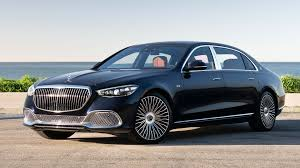
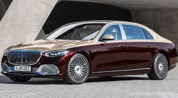
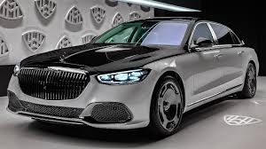

Mercedes-Maybach S 680 4MATIC je ultra luksuzna limuzina sa 6.0L V12 motorom i pogonom na sve točkove. Nudi izuzetnu udobnost, tišinu u vožnji i naprednu tehnologiju. Unutra se ističe vrhunski enterijer sa masirajućim sedištima, premium ozvučenjem i brojnim opcijama za personalizaciju. To je trenutno jedan od najluksuznijih Mercedesovih modela, namenjen kupcima koji traže maksimalan komfor i prestiž.
  